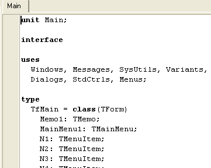

Модуль
Проект в Delphi представляет собой набор программных единиц – модулей.
Модуль на английском языке называется Unit.
Когда мы разрабатываем форму, мы одновременно обрабатываем модуль этой формы.
Модуль – это файл с расширением *.pas.
Это расширение – сокращение от языка программирования Pascal, на котором строилась Delphi.
Иначе говоря, модуль – исходный код программы, или исходник.
Как только мы создаем новую форму, сразу же создается и модуль для нее.
Delphi заполняет этот модуль необходимым кодом, а нам остается создавать код для обработки кнопок и различных событий.
Давайте на примере уже рабочей программы посмотрим, из чего состоит проект.
Откройте проект MyNotebook из "Меню".
Перейдите на редактор кода.
На самом верху вы видите строку
unit Main;
Unit – это зарезервированное слово, обозначающее Модуль формы.
Зарезервированными называются служебные слова, которые уже имеют собственные названия в компиляторе, и такие названия нельзя давать переменным, константам, массивам, компонентам, функциям или процедурам.
Зарезервированные слова в коде всегда выделяются жирным шрифтом, вы можете это видеть на примере таких слов, как unit, interface, uses, begin или end, и так далее:
Когда мы создавали форму, то сразу дали ей имя (свойство Name ) fMain.
А когда сохраняли проект, Delphi прежде всего запросила имя для модуля формы.
Мы назвали модуль также как форму, но без начальной буквы f - Main.
Вот почему наверху кода unit (Модуль) этой формы имеет имя Main.
Теперь вы понимаете, как важно соблюдать правила наименования форм и модулей?
Когда в проекте будет много форм, то и модулей будет много, и если вы не будете соблюдать эти правила, то запросто запутаетесь в названиях.
И также важно давать формам и модулям осмысленные имена.
В сложных проектах таких форм и модулей может быть сотни!
Но вернемся к проекту MyNotebook.
Взгляните на код. Далее идет служебное слово interface.
Эта директива сообщает компилятору, что начинается раздел интерфейса.
В этом разделе, прежде всего, указываются модули, подключенные к данному модулю.
Они описываются после служебного слова uses.
Когда мы вводим какую-либо функцию или процедуру, мы не задумываемся, откуда она берется.
А эта функция описана в одном из подключенных модулей!
Давайте в этом убедимся. Спустите курсор в нижнюю часть модуля.
Последней у нас описана процедура вызова модального окна fAbout.
Ниже этого вызова введите строку:
ShowMessage('Привет!');
Она тут совершенно не нужна, и потом мы ее удалим.
А пока что установите курсор внутри самого слова ShowMessage, и нажмите <Ctrl>+<F1>.
Тем самым, вы вызываете контекстную подсказку именно об этой команде.
И в самом начале справки вы видите указание, в каком модуле описана данная процедура:
Unit Dialogs or QDialogs
Теперь вернитесь к разделу uses, в котором описаны подключенные модули.
Вы можете убедиться, что модуль Dialogs в списке присутствует.
Если бы это было не так, то при попытке вызвать процедуру ShowMessage компилятор сразу сообщил бы нам об ошибке, он просто не нашел бы описания этой процедуры и не знал, откуда ее вызвать.
Данный раздел подключенных модулей Delphi генерирует самостоятельно, и добавлять сюда другие модули вручную приходится лишь в том случае, когда вы хотите воспользоваться процедурой, описанной в модуле, которого в списке нет.
Вы точно знаете, что такая процедура или функция существует, но компилятор выдает ошибку.
Тогда вы устанавливаете курсор на имя процедуры и вызываете контекстную подсказку.
И смотрите, в каком модуле описана данная процедура.
Если этого модуля в списке нет, а процедура вам нужна позарез, добавьте модуль в список.
Кстати, количество подключенных к форме модулей объясняет, почему, казалось бы, небольшой проект имеет достаточно большой размер *.exe файла.
Ведь подключенные модули содержат множество описаний функций и процедур, и даже если мы их не используем, они все равно доступны.
Однако беспокоиться по этому поводу не стоит – нам едва ли придется писать программы, для которых критичен размер исполняемого файла.
Это, как правило, драйверы или вирусы, и хотя на Delphi можно написать и то, и другое, для этих задач больше подходит чистый С.
А если вы будете использовать Borland C++ Builder или Microsoft C++ Visual, то и они имеют множество подключенных модулей, и размер даже маленькой программки окажется большим.
Вернемся к нашему коду.
Далее идет служебное слово type, которое описывает форму – какие в ней находятся компоненты, как они называются, и какие процедуры используются.
В этом блоке вы видите разделы:
private
{ Private declarations }
public
{ Public declarations }
В раздел private можно добавлять описания собственных функций и процедур, которые не должны быть видны из других подключенных модулей.
А если вы эти же самые процедуры и функции опишете в разделе public, то их можно будет использовать и в других модулях проекта.
Позже мы не раз будем пользоваться этой возможностью.
Далее идет описание глобальных записей, констант и переменных.
Здесь у нас есть только одна глобальная переменная:
var fMain: TfMain;
Это – форма.
Да, да, не удивляйтесь, форма – это переменная типа TForm.
Точнее, не просто переменная, а объект со своими свойствами, событиями и методами.
Здесь же вы можете объявить собственные переменные или массивы, чтобы они стали глобальными.
Глобальные переменные видны во всем модуле, в любой, описанной ниже процедуре или функции.
Вот пример: допустим, нам много раз придется проверять адрес, откуда запущена программа.
Скажем, по этому адресу у нас лежит файл, в который мы то и дело сохраняем различные настройки программы, или считываем их.
А в процессе работы программы текущая папка может быть изменена на другую.
В результате, обратившись к файлу просто по имени, мы рискуем вызвать ошибку в программе.
Чтобы этого избежать, нужно полностью указывать и адрес файла, и его имя.
В этом разделе глобальных переменных мы можем создать собственную переменную:
var fMain: TfMain; adres: String; //для адреса, откуда запущена программа
Затем выделить главную форму, перейти на вкладку Events (События) и двойным щелчком мыши сгенерировать событие OnCreate, которое происходит однажды, при создании формы, или же OnActivate, которое происходит, когда форма становится активной.
В этом событии прописать такую строку:
adres := ExtractFilePath(Application.ExeName);
Переменную adres в процедуре описывать не нужно – она глобальная, и мы ее уже описали.
Функция Application.ExeName вернет полное имя файла нашей программы, а функция ExtractFilePath() вычленит из этого имени адрес, и вернет его.
В дальнейшем, в любой процедуре или функции модуля, где будет необходимо обратиться к файлу, например, myparam.ini, который находится там же, откуда запущена программа, достаточно указать:
... adres + 'myparam.ini' ...
и мы получим имя файла вместе с полным адресом, откуда бы программа ни была запущена.
Далее идет раздел implementation.
Это раздел реализации.
Он содержит сами процедуры и функции, которые поддерживают работу этой формы.
Кроме того, в этом разделе также может присутствовать директива uses, в которой объявлены модули, подключенные к данной форме.
Данный раздел необязателен – если в вашем проекте только одна форма, то раздела не будет вовсе.
Если есть еще одна форма, как в нашем примере – форма fAbout, модуль которой называется About, то этот раздел добавляется автоматически, как только вы воспользуетесь командой File -> Use Unit.
Сразу под ключевым словом implementation у нас есть строка
uses About;
которая говорит о том, что к данной форме подключен модуль About.
Можно модули добавлять и вручную, однако лучше все-таки делать это с помощью команды меню – так вы будете застрахованы от возможных ошибок.
Однако если вы создали ошибочную связь с другой формой, то удалить эту связь можно вручную.
Далее вы видите такую строку, выделенную зеленым цветом:
{$R *.dfm}
Это не комментарий, как можно было бы подумать, а директива компилятору, что в процессе компиляции следует использовать файл описания формы.
Файлы, которые составляют проект, мы рассмотрим чуть позже.
После этой директивы, собственно, и начинается работа программиста.
Далее идут процедуры и функции, сгенерированные для обработки событий компонентов формы.
Сюда же программист может добавить собственные процедуры и функции, однако не забывайте правила – чтобы воспользоваться процедурой или функцией, она должна быть описана выше того места, где мы хотим ее вызвать!
Самой последней строкой в модуле обязательно должна присутствовать завершающая модуль команда end с точкой.
Точка указывает, что модуль завершен, после нее других строк быть не должно.
Закройте этот проект, сохранять его не нужно, команда ShowMessage, которую мы дали для примера, в программе не нужна.
Создайте новый проект и перейдите в редактор кода.
Сразу после директивы компилятора вы видите строку
end.
Обратите внимание, что слова begin перед ней нет, и быть не должно!
Это – единственное исключение из правила скобок begin..end.
Собственно, это даже не исключение, потому что эта end не является закрывающей скобкой, это завершение модуля.
Теперь, если мы будем устанавливать на форму компоненты, и обрабатывать для них события, будут формироваться процедуры между директивой компилятору и завершающей end.